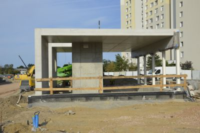
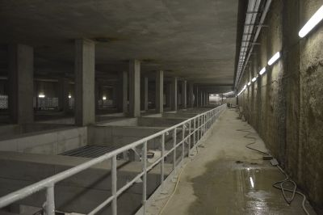
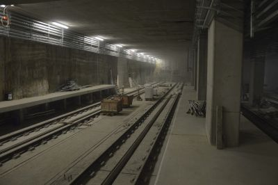
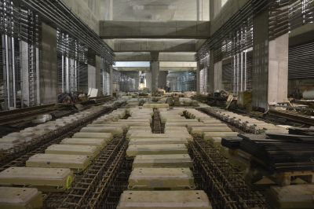
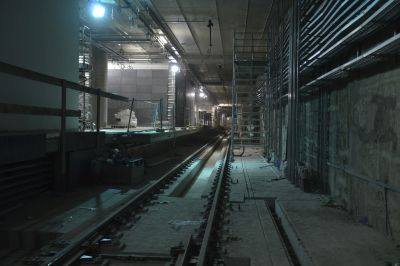
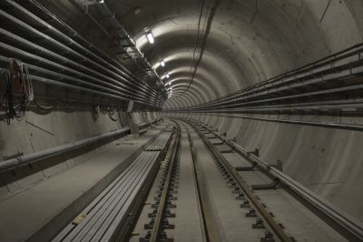
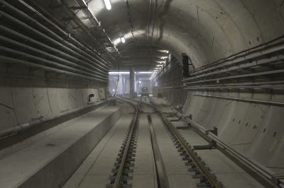
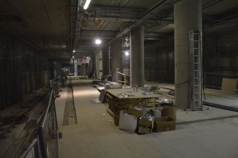
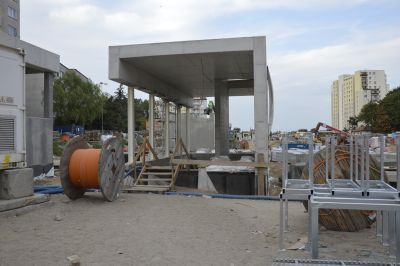

 Wejście na stację Trocka |
 Korytarz nad komorą torów odstawczych |
 Koniec torów postojowych |
 Komora torów rozjazdowych na stacji Trocka |
 Wjazd na stację Trocka |
 Tunel ze stacji Trocka na stację Targówek Mieszkaniowy |
 Komora torów rozjazdowych na stacji Targówek Mieszkaniowy |
 Peron stacji Trocka |
 Wejście na stację Trocka |